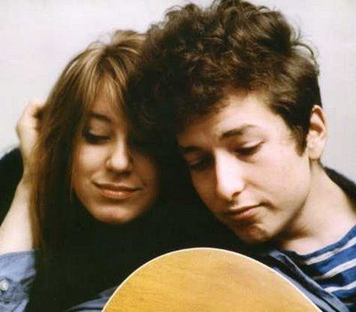

Bob dylan
Bob Dylan (born Robert Allen Zimmerman, May 24, 1941) is an American singer-songwriter, artist, and writer. He has been influential in popular music and culture for more than five decades. Much of his most celebrated work dates from the 1960s when his songs chronicled social unrest, although Dylan repudiated suggestions from journalists that he was a spokesman for his generation.
Dylan's lyrics have incorporated various political, social, philosophical, and literary influences. They defied existing pop music conventions and appealed to the burgeoning counterculture. Initially inspired by the performances of Little Richard, and the songwriting of Woody Guthrie, Robert Johnson and Hank Williams, Dylan has amplified and personalized musical genres. His recording career, spanning 50 years, has explored the traditions in American song—from folk, blues, and country to gospel, rock and roll.